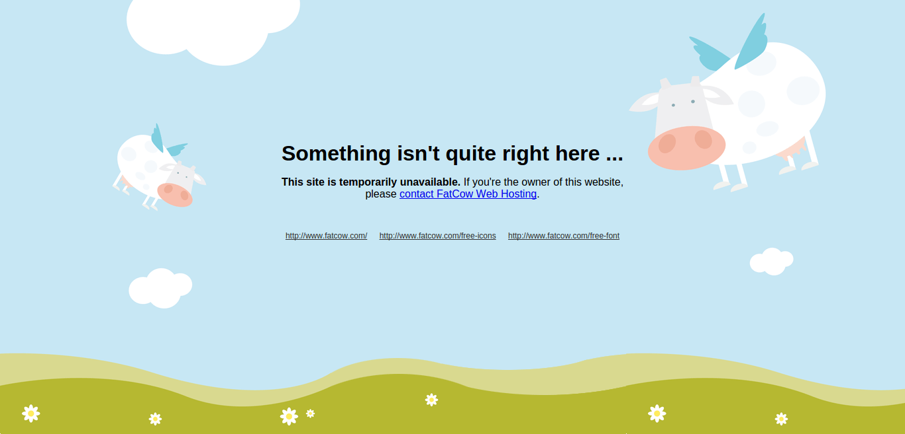

The ghosts of WordPress past
To me, WordPress is like a puppy. I don't really need one, but it's nice to have one around and it does make life a bit more pleasant. Until, of course, it shits itself in the middle of the room on your favorite carpet.
After redesigning my website and moving it from WordPress to a static site generator, I took to Google's Webmaster Tools to ask the almighty Googlebot to recrawl the whole thing. Since many of the old links were now dead, I was curious to see if they had been removed from the search results. After typing site:helpfulsheep.com and clicking the second page, my jaw dropped.
{kind=link}
hey, at least it's not viagra and cialis
Now you might be asking yourself why on Earth would a good looking guy like me spend his time writing so many articles on loans. And you'd be a bit of an asshat for that. As you can imagine, none of those posts were mine. They seemed to come from my website but I had never written or seen them. Because I had removed WordPress from my server, all those links were now throwing out 404 errors. Luckily, Google caches the pages it visits so you can see what they looked like to the Googlebot.
{kind=link}
that's the kind of shitty writing that could make a Markov chain cry
I was pretty dumbfounded. I asked a friend who's keen on WordPress for an opinion and he suggested that it was probably an injection in my WordPress install.
Unfortunately, I had deleted all of WordPress' files when I redesigned my website, but I did keep a database dump as a souvenir (because that's the kind of souvenirs you get when you're a programmer). Since my WordPress install was extremely clean i.e. default theme with a single additional plugin (slimbox) and all my passwords were 20 character alpha-numerico-@#$%^-hellstorms, I was really curious to see if somebody had managed to gain access to my db. After running cat db.sql | grep -i loan and checking most of the tables, I concluded that although I was running WordPress 3.2.1, the db had not been altered.
Playing around with Webmaster Tools, I came across a very interesting timeline of the attack. As you can see, my website went from 70 indexed pages to about 600 overnight.
{kind=link}
{kind=link}
guess who's #1 in the "installment loans sheep" search results?
Going through some of the pages in the Google cache revealed that the earliest appearance of these posts was December 24, 2014. One heck of a Christmas present, huh?
Since that was about all I could dig out from the remains of my violated former website, I hoped that Google's cache would help me find out more about the attack. I wanted to know how many pages they managed to inject into my website and what those pages were linking to. Of course, I wasn't going to click through 15 pages of search results. I whipped out a quick selenium script and soon enough I had the results: there were 559 malicious links from my website to 353 infected domains. I started playing around with the links to try and figure out how they work and that's when
Things got interesting
As you can see here, by entering those URLs in the address bar, you got a 404 page. Clicking the link from Google on the other hand loaded up a page about loans. The webpage source?
{kind=link}
1 2 3 | <frameset rows="*,0" framespacing="0" border="0" frameborder="NO">
<frame src="http://getthisloannow.com/in.php?mk=no+documents+cash+loans+online&p=NEW_19" noresize="" scrolling="auto">
</frameset>
|
The difference between entering the URL and clicking the link? You guessed it, about 0.0005 calories. And a Referer header.
1 2 3 4 5 6 7 8 9 10 11 12 13 14 15 16 | # trying to access the page directly
wget http://www.heartlandsolutionsinc.com/installment-loans-de/
2015-02-18 17:48:39 ERROR 404: Not Found.
# making it look like you clicked a link from my website
wget --header="Referer: http://www.helpfulsheep.com/personal-loan-washington/" http://www.heartlandsolutionsinc.com/installment-loans-de/
2015-02-18 17:49:52 ERROR 404: Not Found.
# making it look like you clicked a link from Google... BINGO!
wget --header="Referer: https://www.google.com/" http://www.heartlandsolutionsinc.com/installment-loans-de/
HTTP request sent, awaiting response... 200 OK
# pretending you're the Googlebot... JACKPOT!
wget --header="User-Agent: Mozilla/5.0 (compatible; Googlebot/2.1; +http://www.google.com/bot.html)" http://www.heartlandsolutionsinc.com/installment-loans-de/
HTTP request sent, awaiting response... 200 OK
|
After trying to use the first 20 most popular websites in the US as referrers, I found out the pages were quite picky. Apart from the word "google", I only managed to make them work for "yahoo". "Bing" did not work either. I'm sorry, Microsoft.
As far as the user agent goes, including the word "bot" seemed to be enough to trigger a successful response. As you can guess, the pages serve different content based on who's visiting:
- if you're a search engine, you're gonna see the kind of link-filled random article that I showed you earlier, hopefully making you go on a wild goose chase
- if you're a normal user and you're coming from Google or Yahoo, you're gonna see the page from getthisloannow.com
- if you're the website owner and just type in the URL to make sure there's nothing there, you get a reassuring 404 page
Pretty sleek, huh?
After trying out a few more of those links, the page below started popping up: 
{kind=link}
How quaint, we seem to be sharing the same hosting provider! Yes, Helpful Sheep is hosted on FatCow, hilarious, I know.
Running nslookup on the domains revealed that 65% of them were using FatCow nameservers. I though that couldn't have been a coincidence, so I sent the people at FatCow a report, detailing what happened. They were really quick to reply and said they will have their security staff look into it. I'm really curious as to what the conclusion will be. Was it a breach in WordPress or did the attackers manage to break into the servers at FatCow? In the meantime, I'm off to let those website owners know they've been hacked.
I've also sent and email to contact@getthisloannow.com to ask about their business model. Hey, maybe it pays well, who knows? In case you're wondering, filling out their loan form just redirects you to a page filled with... Google Ads. Yes. I know.
I will update this as things move along.
A few hours later, I received an email from FatCow:
Dear Gabi,
Thank you for contacting support.
There doesn't appear to be any indication of any server-side security breach at this point: even though that may seem a large number, it's actually only a fraction of one percent of the number of Wordpress installations present across our system. Investigation is ongoing, but typically in cases like this, we'll often find there was a common issue, such as a vulnerable plugin or theme, such as the exploit described here.
We appreciate you bringing this to our attention, though for obvious reasons, we're sure you understand we can't provide specific information on how this is being handled, what we find out, etc.
Needless to say, I'm happy to see they took the time to investigate the issue and it's good to know that it was most likely a WordPress issue. All in all, good lesson on web security, right there.